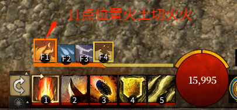
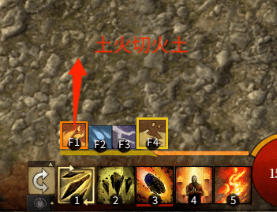
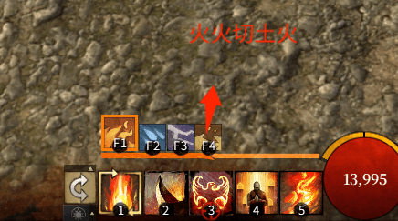
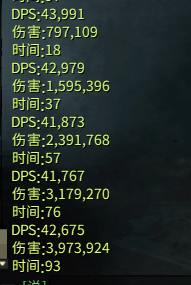
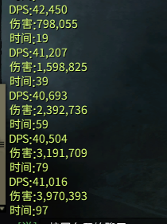

症状编织 节号
|火土3黑=火火切土火，土21，自我编织，原始姿态，火5，火3，火2，土22，火土3，土5，大地纹章，火焰纹章，火2黑=火土切火火，火2黑=土火切火土，普攻||
火土3黑|火火切土火,F4,1,2,500,2,100|土21,2,760|自我编织,0,800|原始姿态,9,1,,,,,,,,,,,,,,,,,,1,5000,0|火5,5,680|火3,3,490|火2,2,680|土22,2,1|火土3,3,921|土5,5,840|大地纹章,8,520|火焰纹章,7,520|火2黑|火土切火火,F1,1|土火切火土,F1,1,2,500|普攻,1,30
[&DQYfJRomOBV0AHQAywBzAJEAywA1FzUXEhcSFwAAAAAAAAAAAAAAAAAAAAADVgBnADYAAA==]
删除了一些没必要的判定,注意 如果土火协调不切火土的话 多取几次色 ，编织有一个问题 就是切地图以后 这个协调图标有一点偏移，切图以后手动切一下协调就能归正到取色时的状态，或者多试几次也能蒙到那个50精确度能够偏移以后也识别到的点，尽量取在整块色域色值接近的地方，大图标和小图标都很稳定，只有编织特色的中图标不好取色，这个中号图标 取花色部分偏移后就不准了 尽量取在深颜色部分
或者这个中号的土火切火土图标 大家也可以试试取火火和火土时火图标的反色模式试试，我色值稳定了 实在不想再重新取了 就不试了 ，蒙了好多次才蒙到那个不怕偏移的点
取色如图



毒蛇标灌

帕花标灌， 龟龟 ，这东西穿帕花伤害也这么高啊 比毒蛇只掉了一丢丢 ，变一坨肉了，谁还敢说小脆皮

评论列表（15）
大佬经常在火火下不切土火是因为啥，开时前半段是正常的切着就不切了
火土三黑怎么取色大佬
能不能把技能取色表下看看 哪些要设置按键的？
大佬装备古物这些能详细一下么
符文法印这些
实测可以取大F1左上角的反色
感谢大佬
土21是什么
这个切f1取色没啥用啊
能求个暴风使的宏吗，就是只有迈古玛dlc那种小号可以用的，直伤，症状或者奶的。
被砍得没法玩了，没有意义，还是脆皮鸡，过载断稳固还是一坨，只有迈古玛dlc那种小号只能玩大锤机械，直伤夺魂这种
大佬 好像必须得火火起手？其他协调起手的话可能不切
你只要不是进图时就土火协调 基本遇不到这个问题 因为切地图时是其他协调的话 进图准备土火 手动切土了以后 就规避了这个问题
牛逼 这个比上次的又有提升 差4个满13灌 44k 刚打个8x输出非常给力
科研大佬牛逼，15灌44.7